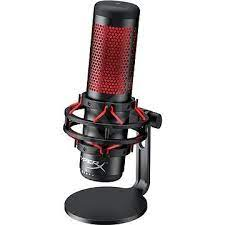
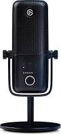
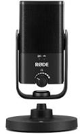
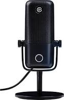
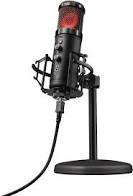

Cena s dph: 139,90€

Mikrofón stolný, pripojenie USB, dĺžka kábla 3 m,
kondenzátorový, smerové snímanie,
podpora aptX, aktívne potlačenie hluku (ANC),
frekvencia od 20 Hz do 20000 Hz, impedancia 32 Ohm
citlivosť -36 dB
Elgato Wave:3
Cena s dph: 178,90€

Mikrofón stolný, pripojenie USB,
kondenzátorový, smerové snímanie,
frekvencia od 70 Hz do 20000 Hz,
citlivosť -25 dB
RODE NT-USB Mini
Cena s dph: 124,90€

Mikrofón stolný, pripojenie USB,
kondenzátorový, smerové snímanie,
frekvencia od 20 Hz do 20000 Hz,
pop filter
Elgato Wave:1
Cena s dph: 143,90€

Mikrofón stolný, pripojenie USB,
kondenzátorový, smerové snímanie,
frekvencia od 70 Hz do 20000 Hz
Trust GXT256 EXXO STREAMING MICROPHONE
Cena s dph: 137,90€

Mikrofón stolný, pripojenie USB, dĺžka kábla 1.8 m,
kondenzátorový, smerové snímanie,
frekvencia od 30 Hz do 18000 Hz, impedancia 32 Ohm,
citlivosť -36 dB, pop filter